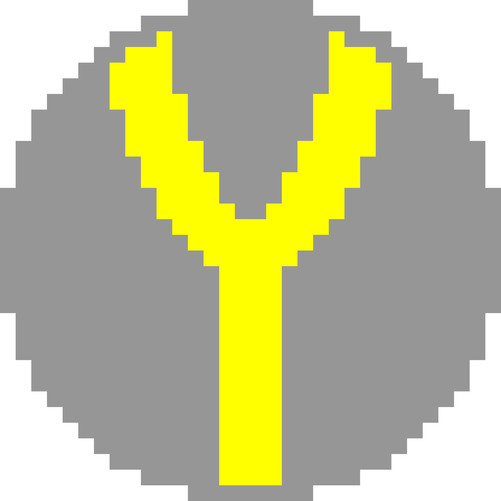

Skills Learnt From EP1000 Module
Web Development
Materials Used
Borrowed Book
I borrowed a book from the Singapore Polytechnic library, Introduciton To Web Development Using HTML5. The link leads to a website that contains the essentials of the book. The condensed content from the website greatly aided in the coding of this website, with the most used sections of the book being the chapters shown below:- Chapter 2: Integrating Images
- Chapter 3: Using Hyperlinks to Connect Content
- Chapter 4: Presenting Lists
- Chapter 5: Formatting Content with Tables
- Chapter 7: Styling Content Using Cascading Style Sheets
- Chapter 8: Advanced CSS
Icon Production
I used a pixel art website, pixilart.com to make the browser icon used for this website, which is a stylised yellow letter Y on a grey circle for its background, as shown below:
Note that the image shown above is a upscaled version of the icon that is 3200x3200 instead of the actual 32x32 version used as the icon of the website.
Past iterations of the icon
Version 1 of the icon, the V part of the letter Y was found to be too thin to see properly as the browser icon.
Version 2 of the icon, found the stem of the letter Y to be too thick and unbalanced.
Version 3 of the icon, found it the black outline of the circle to be unnoticeable and drowned out by dark mode browsers.
Version 4 of the icon, found the yellow outline of the circle to be unnoticeable and drowned out by light mode browsers.
Version 5 of the icon, final product.
Upscaled by 100x
Actual version used, 32x32 pixels
CSS
CSS stands for Cascading Style Sheets, it is a method used to describe the presentaion of a document written in languages such as HTML(HyperText Markup Language) or XML(eXtendable Markup Language) CSS enables programmers to change the look, feel and overall presentaion of a website, allowing developers to customise every aspect of their websites to their liking. This is a website i personally used as reference: w3schools.com
Javascript
Javascript is a part of website development that i have not touched.